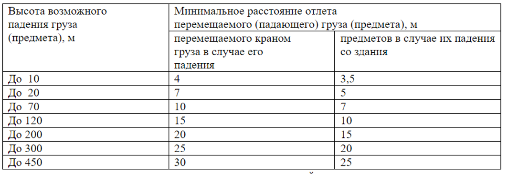
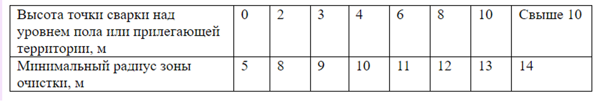
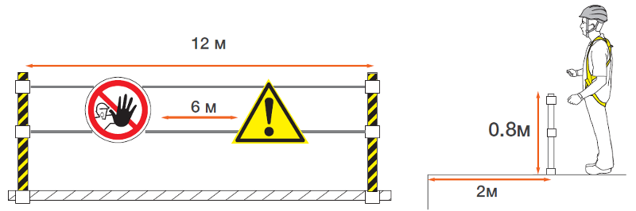
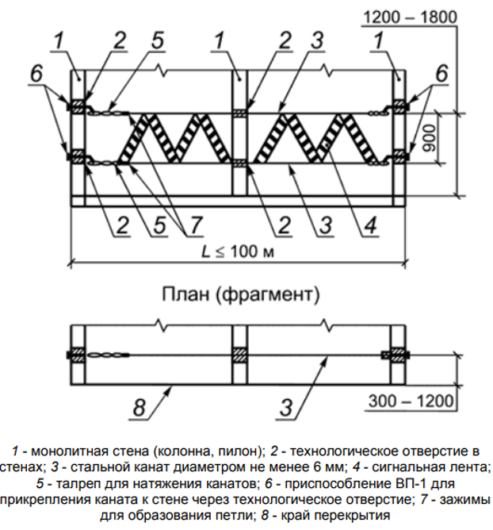
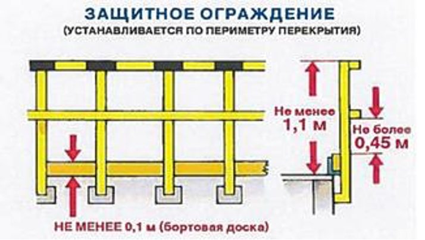
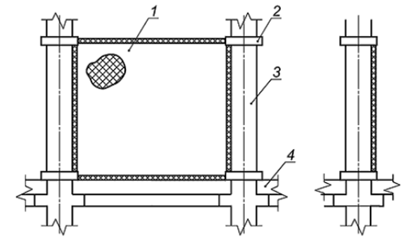
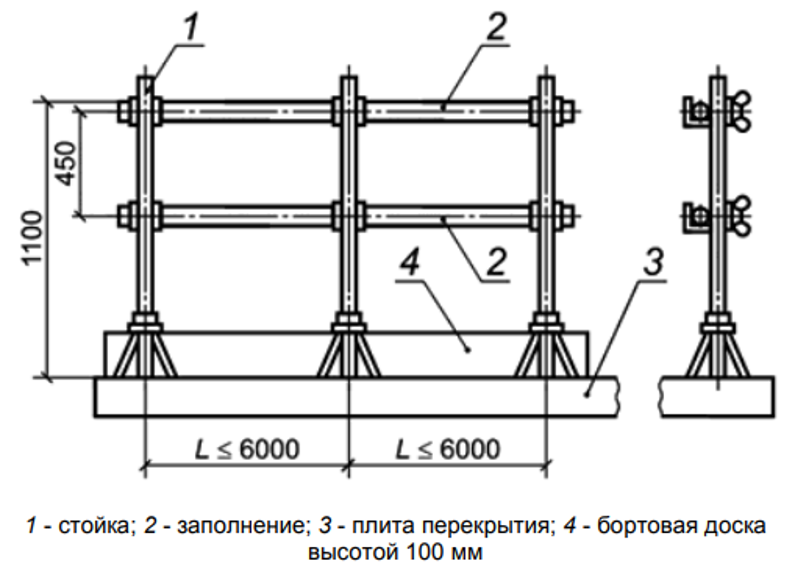

Заполняем план производства работ на высоте (ППРв)

На этом уроке вместе с экспертом Школы проанализируете состав и содержание ППРв. Разберем, как с помощью проекта производства работ на высоте снизить риски и создать безопасные условия для участников строительства. Вы поймете, почему важно заранее запрашивать у работодателя внутренние требования к ППРв, а рекомендации преподавателя помогут вам самостоятельно заполнить этот документ.
Что такое ППРв
План производства работ на высоте – это организационно-технологическая документация, которая регламентирует порядок выполнения высотных работ с учетом требований охраны труда, безопасности и организации рабочих процессов.
ППРв разрабатывают по нормативным актам и утверждают перед началом выполнения работ.
Документ содержит пояснительную записку и графическую часть, в которых подробно описывают методы, средства защиты, порядок проведения работ и меры безопасности.
Когда оформляют ППРв
Работодатель до начала работ на высоте утверждает положение СУОТ и начинает разрабатывать и выполнять план производства работ на высоте или разрабатывать и утверждать технологические карты на производство работ (п. 36 правила по охране труда при работе на высоте (приказ Минтруда от 16.11.2020 №782н).
К работам на высоте относятся работы, при которых (п.3 Правил работы на высоте):
- Возможны риски падения работника с высоты 1,8 м и более, в том числе в следующих случаях:
- при подъеме на высоту свыше 5 м или спуске с такой высоты по лестнице с углом наклона более 75° к горизонтальной поверхности;
- при выполнении работ на площадках, расположенных ближе 2 м к неогражденным перепадам высотой более 1,8 м, а также при недостаточной высоте защитного ограждения (менее 1,1 м).
2. Возможны риски падения работника с высоты менее 1,8 м, если работают над:
- машинами или механизмами,
- поверхностью жидкости,
- сыпучими мелкодисперсными материалами,
- выступающими предметами.
Организации вправе создавать внутренние регламенты, где устанавливают параметры работ на высоте. Например, устанавливают высоту 1,3 м, а не 1,8м.
Чтобы уточнить параметры работы на высоте, запросите у заказчика или эксплуатационной организации внутренние нормативы по охране труда. Особенно, если работы проводят на опасном производственном объекте.
Кто утверждает ППРв
ППРв утверждает ответственный за организацию и безопасное проведение работ на высоте (пп. «а» п. 46 Правил работы на высоте). Это специалист с третьей группой по безопасности работ на высоте (п. 15 Правил работы на высоте).
Состав ППРв
Утвержденного состава ППРв не существует. Есть требования правил работы на высоте, где определили содержание ППРв.
Содержание ППРв и технологических карт на высоте смотрите в пункте 36-42 Правил работы на высоте.
На объектах у заказчиков бывают свои требования к составу ППРв, которые утверждают внутренними нормативными документами. Поэтому рекомендуем перед разработкой ППРв уточнить наличие таких требований и разрабатывать ППРв в соответствии с ними.
Если на вашем объекте нет особых требований к ППРв, пользуйтесь рекомендуемым содержанием документа, которое основано на требованиях правил работы на высоте. Помните, что любой ППРв адаптируют под конкретный объект.
Материал к уроку (PDF)
Рекомендуемое содержание ППРв:
PDF получен с исходной страницы. Поля для названия организации и других персональных данных оставлены пустыми.
Примечание: разделы 20 (п. 20.1-20.7) заполняют только если используют подъемные сооружения.
Рассмотрим разделы ППРв подробнее:
Материал к уроку (PDF)
Основные разделы ППРв
PDF получен с исходной страницы. Поля для названия организации и других персональных данных оставлены пустыми.


Требования к ограждениям
Временные предохранительные ограждения соответствуют требованиям ГОСТ Р 12.3.053-2020.
Сигнальные ограждения
Сигнальные ограждения изготавливают в виде каната, который не рассчитан на нагрузки. Канат прикрепляют к стойкам или устойчивым конструкциям зданий и сооружений. На канат вешают знаки безопасности в виде правильных треугольников желтого цвета с черной каймой, со стороной не менее 100 мм. Знаки безопасности оформляют по ГОСТ 12.4.026. Расстояние между знаками не более 6 м.

Сигнально-защитные ограждения
Сигнально-защитные ограждения изготавливают в виде каната. Они обозначают опасную зону, также их используют как опору для закрепления карабином предохранительного пояса в опасной зоне на междуэтажных перекрытиях.
Сигнально-защитные ограждения проверяют на прочность и устойчивость к горизонтальной сосредоточенной нагрузки, которая прикладывается в любой точке по высоте ограждения в середине пролета. Не менее 1 кН с коэффициентом динамичности 1,4.

Защитные и страховочные ограждения
Высота защитных и страховочных ограждений – расстояние от уровня рабочего места до самой низкой точки верхнего горизонтального элемента.
Высота должна быть не менее 1,1 м, высота сигнальных ограждений– от 0,8 до 1,1 м, высота сигнально-защитных ограждений – от 1,2 до 1,8 м.
Расстояние между узлами крепления ограждений к надежным частям зданий и сооружений не должно быть больше 6 м для защитных ограждений и страховочных, а для сигнальных ограждений допускают расстояние до 12 м.
Расстояние от границы перепада по высоте до ограждения должно быть:
- для страховочных ограждений: не более 0,3 м;
- для сигнальных и защитных: не менее 2,0 м;
- для сигнально-защитных: не менее 0,5 и не более 1,8 м.
Расстояние между горизонтальными элементами в вертикальной плоскости защитного ограждения не более 0,45 м.


